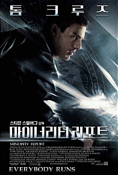
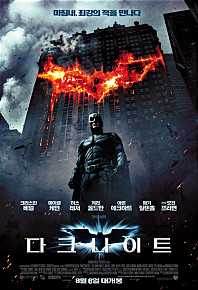
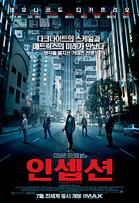
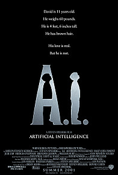

My Favorite Movie
-
A Beautiful Mind (뷰티풀 마인드)
- 영화 종류: 드라마
- 감독: 론 하워드
- 출연: 러셀 크로우, 에드 해리스, 제니퍼 코넬리, 폴 베타니
- 줄거리: 천재적 수학능력을 지니고 있지만 자신이 정부 비밀 요원으로 일한다는
환각과 환청에 빠져드는 주인공의 모습을 다루고 있다. 이런 주인공의
극복 이야기를 담은 영화
-
Minority Report (마이너리티 리포트)

- 영화 종류: SF, 미스터리
- 감독: 스티븐 스필버그
- 출연: 톰 크루즈, 콜린 파렐, 사만다 모튼, 막스 본 시도우
- 줄거리: 범죄가 일어나기 전 범죄를 예측해 범죄자를 단죄하는 치안 시스템은
시민들의 안전을 지켜주는 존재이다. 이러한 곳에서 능력을 인정받고
있는 팀장인 존 앤더튼의 미래 범죄 계획이 나타나면서 일어나는 영화.
-
The Dark Knight (다크나이트)

- 영화 종류: 액션, 범죄
- 감독: 크리스토퍼 놀란
- 출연: 크리스찬 베일, 히스 레저, 아론 에크하트, 마이클 케인
- 줄거리: 범죄와 부정부패를 제거하여 고담시를 지키려는 배트맨. 그러나 목적도
룰도 없는 조커를 만나면서 고담시를 지키는데 어려움을 겪는다. 시민들의 선을
믿는 배트맨과 믿지 않는 조커의 대결을 담은 영화.
-
Inception (인셉션)

- 영화 종류: 액션, SF, 스릴러
- 감독: 크리스토퍼 놀란
- 출연: 레오나르도 디카프리오, 조셉 고든 레빗, 와타나베 켄
- 줄거리: 드림머신이라는 기계로 타인의 꿈과 접속해 생각을 빼낼 수 있다는 미래사회
수배가 내려진 주인공에게 모든 것을 되돌릴 수 있는 기회가 주어진다.
주인공이 '인셉션'이라는 작전을 성공적을 수행하기 위한 과정을 그린 영화.
-
A.I (에이아이)

- 영화 종류: SF, 드라마
- 감독: 스티븐 스필버그
- 출연: 헤일리 조엘 오스먼트, 주드로, 프란시스 오코너
- 줄거리: 인간 로봇을 만들어낸 미래 사회에서 로봇이 사람과 같은 감정을 가지고
있다는 감성적인 영화이다. 주인공은 자신이 가장 사항하는 엄마로 부터 버립받았지만
춧날 엄마와의 마지막 하루를 보내고 함께 영원한 잠에 빠져드는 영화.